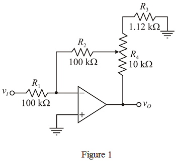

Step 1:
Refer to circuit diagram in Figure P2.35 in the textbook.
The input resistance of the circuit is  .
.
Range of the gain is from to .
Write the expression for voltage gain.
…… (1)
The voltage gain for minimum potentiometer resistance, is  .
.
Substitute  for
for  , for
, for  and
and  for
for  in the equation.
in the equation.
Step 2:
The voltage gain for maximum potentiometer resistance, is  .
.
Recall equation (1).
Substitute  for
for  ,
,  for
for  ,
,  for
for  and for
and for  in the equation.
in the equation.
Step 3:
The designed circuit is shown in Figure 1.

Step 4:
When the potentiometer is set exactly at its middle value, the values of  and
and  are,
are,
Calculate the voltage gain.
Therefore, the voltage gain,  of the circuit when the potentiometer is set exactly at its middle value is.
of the circuit when the potentiometer is set exactly at its middle value is.